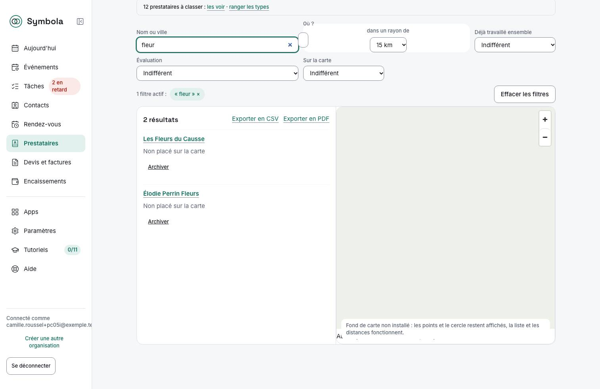

Prestataires : le carnet, ses lignes et ses filtres
Le carnet doit répondre en un coup d'œil à « mes fleuristes autour de Poitiers, dont les pièces sont à jour », se trier, agir sur plusieurs fiches, et dire franchement ce qu'il ne sait pas encore (un carnet importé sans métier).
Données fictives : l'Atelier Roussel des volets 1 à 3 (Camille, Bastien), le mercredi 25 novembre 2026 ; 48 fiches au carnet, dont 37 importées la veille dans l'état « tout juste importé ». Couleurs : jetons actuels, répartition A en rôles.
Les captures « aujourd'hui » sont celles du relevé, d'avant le lot 69, qui a depuis rendu sa largeur au champ « Où ? » (C-43) ; la maquette va au-delà de cette correction.
La ligne du carnet : nom, métier, ville, téléphone, mariages, pièces (C-44, C-47)
Aujourd'hui, une ligne prend 138 px pour un nom, « Non placé sur la carte » et un lien noir « Archiver » ; la carte, vide, occupe la moitié de l'écran. Proposé : un tableau à colonnes triables, une ligne de 60 px qui dit ce que la planner cherche (métier, ville, contact et téléphone, mariages faits ensemble, évaluation, état des pièces), une action rapide, « Ajouter à un mariage… » (page 19), et un menu « ⋯ » (Ouvrir la fiche, Appeler, Écrire, Modifier, puis à part « Archiver… »). La carte devient une vue, « Liste · Carte », au lieu d'une moitié d'écran. Les familles de métiers restent des pastilles, au-dessus des filtres, avec leur nombre.
Aujourd'hui 138 px par ligne ; « Non placé sur la carte » douze fois ; « Archiver » sur chaque ligne
C-44, P-10 : une ligne, une cible (le nom, qui ouvre la fiche), une action rapide et un menu ; « Archiver » quitte la ligne pour le menu, à part, avec « Annuler » pendant dix secondes (volet 1, danger de niveau 1).
C-44, P-06 : métier, ville, contact, téléphone, mariages et pièces sur la ligne ; « 48 » n'est écrit qu'une fois en tête et une fois dans la pastille « Tous ».
C-47, P-13 : une pastille par famille, puis les métiers de la famille choisie (ci-dessous) ; « 48 fiches, par nom » dit l'ordre et le nombre.
C-45 : chaque en-tête de colonne trie ; le tri choisi est dit en clair au-dessus du tableau.
Règles de forme appliquées
Une action principale : Nouveau prestataireUne cible par ligneBascules en encre (M8)
Le nom est le seul lien de la ligne ; il ouvre la fiche en un clic (l'aperçu intermédiaire disparaît, page 20).
Pièces : un mot et une forme, jamais la couleur seule ; le rouge ne dit que l'expiré, qui est un retard (volet 1, page 5).
Sur téléphone, une carte par fiche ; le téléphone est un lien de 44 px qui appelle ; les familles défilent de côté sous la barre.
« Importer », « Exporter en CSV », « Exporter en PDF » et « Paramètres du carnet » passent au menu « ⋯ » à côté de « Nouveau prestataire ».
Les filtres : par métier, par lieu, par état des pièces (C-43, C-47, D9)
Aujourd'hui, le champ « Où ? » est un carré de 26 px où la saisie ne se voit pas, et « dans un rayon de » flotte sur un pavé blanc ; aucun filtre par métier dans un carnet non classé. Proposé : une barre de filtres libellés, de même hauteur (règle « Barre de filtres » du lot 63) ; « Où ? » est un champ de 200 px et son rayon une liste à côté, qui n'apparaît active qu'avec un lieu. La famille choisie ouvre ses métiers en second rang. Chaque filtre posé devient une pastille qui s'enlève ; le compte dit « 2 fiches sur 48 ». Un lieu trie par distance, écrite sur la ligne.
Aujourd'hui « Où ? » : 26 px ; « dans un rayon de » sur un pavé blanc

Proposé 1 440 px, des fleuristes autour de Poitiers
Rechercher un évènement, une tâche, un prestataire…Rechercher…⌘K
Créer2CRCamille
Prestataires
48 fiches · une seule par prestataire, réutilisée d'un mariage à l'autre
ListeCarteSélectionnerNouveau prestataire
Tous 48Lieux 6Traiteurs 5Photo et vidéo 7Fleurs et décoration 8Musique 4Beauté 3Transport 3Autres 12
Tous les métiers 8Fleuriste 5Décoration 2Location de mobilier 1
3 filtres :Fleurs et décoration ×Autour de Poitiers, 30 km ×Pièces à jour ×Effacer les filtres
2 fiches sur 48, par distanceTrier par : Distance
Nom
Métier et ville
Avec vous
Évaluation
Pièces
Les Fleurs du CausseJulie Causse · 06 00 00 39 61
FleuristePoitiers · 2 km · ≈ 4 min
3 mariages
4 sur 5
✓À jour
Ajouter à un mariage…
Atelier VerveineSarah Lemoine · 06 00 00 90 12
DécorationChasseneuil · 9 km · ≈ 12 min
Jamais
non noté
✓À jour
Ajouter à un mariage…
Élodie Perrin Fleurs (Châtellerault, 34 km) n'apparaît pas : hors du rayon. Élargir à 50 km
Proposé 375 px : les filtres dans un panneau du bas
C-43, P-20 : « Où ? » a la largeur d'un champ et un libellé ; le rayon est à côté, libellé dans la liste (« à 30 km »).
C-47 (D9), P-13 : famille, puis métier en second rang (« Toute la famille » d'aujourd'hui devient « Tous les métiers ») ; « Étiquette » garde son filtre, rangé par groupe ; les caractéristiques d'un métier (« capacité au moins… ») s'ajoutent à la barre quand un métier est choisi, comme aujourd'hui.
C-42 : « Pièces » est un filtre nouveau (À jour, Demandées, À vérifier, Expirées ou bientôt) ; voir page 19.
§ 6 de la synthèse, gardé : la recherche filtre sans cliquer, « Effacer les filtres » et le compte des filtres actifs.
Règles de forme appliquées
Barre de filtres du lot 63Pastilles de filtre qui s'enlèventBascule en encre
Un filtre posé depuis un autre écran (« Chercher dans tout le carnet », depuis un poste) arrive en pastille nommée et s'enlève comme les autres (C-49).
« Sur la carte : à placer » passe dans la vue « Carte », qui liste à part les fiches sans point (« 3 à placer ») ; le trajet estimé (« 2 km · ≈ 4 min ») s'écrit sur la ligne dès qu'un lieu est posé.
Sur téléphone, le panneau du bas finit par « Voir les 2 fiches » : le nombre avant de fermer (volet 1).
Trier et agir sur plusieurs fiches (C-45)
Aujourd'hui, le carnet ne se trie pas et n'a ni case à cocher ni action sur plusieurs fiches. Proposé : chaque en-tête trie (nom, métier, mariages faits ensemble, évaluation, pièces) ; on entre en sélection par « Sélectionner », comme dans « Tâches » (M2), et la barre d'actions se colle au bas de la liste, bordée d'encre : « Ajouter à un mariage… » (la même fenêtre, pour plusieurs fiches mises en comparaison sur un poste), « Ajouter une étiquette… », « Exporter… » (CSV ou PDF de la sélection), « Archiver… ».
Aujourd'hui aucun tri, aucune case ; « Exporter en CSV » et « Exporter en PDF » au-dessus de la liste
Trier et agir en lot aujourd'hui (PC-05)
Aucun en-tête de colonne cliquable : les fiches sont par ordre alphabétique (Inès, Valérie).
Aucune case à cocher, donc rien en lot ; pas de vue enregistrée (Valérie).
Seuls « Exporter en CSV » et « Exporter en PDF » agissent sur la liste, toute la liste filtrée.
Proposé 1 440 px, trois fiches choisies, triées par mariages
Rechercher un évènement, une tâche, un prestataire…Rechercher…⌘K
Créer2CRCamille
Prestataires
48 fiches
Terminer la sélection
Tous 48Lieux 6Traiteurs 5Photo et vidéo 7Fleurs et décoration 8Musique 4Beauté 3Transport 3Autres 12
48 fiches, par mariages faits ensembleTrier par : Avec vous, du plus au moins
Nom
Métier et ville
Avec vous
Évaluation
Pièces
Nuit Blanche SonoFélix Roussel · 06 00 00 88 30
DJLa Rochelle
7 mariages
4 sur 5
◷Assurance : expire le 15 déc.
Iris BeautéIris Morel · 06 00 00 14 77
Coiffure et maquillagePoitiers
6 mariages
5 sur 5
✓À jour
Maison HaddadKarim Haddad · 06 00 00 41 27
TraiteurPoitiers
5 mariages
5 sur 5
!Assurance expirée
Atelier PapierNora Benali · 06 00 00 23 10
PapeteriePoitiers
4 mariages
5 sur 5
✓À jour
Studio LumièreLéa Marchand · 06 00 00 27 93
PhotographePoitiers
4 mariages
5 sur 5
Kbis demandé
Les Fleurs du CausseJulie Causse · 06 00 00 39 61
FleuristePoitiers
3 mariages
4 sur 5
✓À jour
3 fiches sélectionnéesAjouter à un mariage…Ajouter une étiquette…Exporter…Archiver…Tout désélectionner
Constats traités
C-45, P-13 : un tri par colonne, dit en clair ; la sélection en lot du volet 1 (M2), avec les gestes du carnet.
C-41 : « Ajouter à un mariage… » vaut aussi pour plusieurs fiches (trois fleuristes en comparaison sur le poste « Fleurs et décoration »).
Règles de forme appliquées
Barre de sélection du volet 1 (M2)Une case par ligne, en mode sélection seulement
Hors sélection, aucune case : la ligne garde une cible (P-10).
« Archiver… » en lot demande « Archiver 3 fiches ? » (elles quittent le carnet, pas les mariages où elles sont) et offre « Annuler » dix secondes.
« Exporter… » propose CSV ou PDF, de la sélection ou de toute la liste filtrée : les deux exports d'aujourd'hui sont gardés.
Un carnet tout juste importé : « À classer » le dit, et se règle en un écran (D9, C-47)
La question gardée de D9 : un carnet importé arrive-t-il « À classer » en entier, donc sans filtre le premier jour ? Le code répond : l'import a déjà une étape « Types », qui range chaque métier reconnu du fichier (« Type de Prestataire », « Catégorie », « Métier »…) sous un métier de l'espace ; le carnet n'arrive « À classer » en entier que si le fichier n'a pas de colonne de métier, ou si aucun libellé n'est reconnu. Cet état existe donc, et rien aujourd'hui ne le règle en un geste : il faut ouvrir chaque fiche. Proposé : l'état se dit en une phrase, avec sa raison et une action ; la pastille « À classer · 37 » s'ajoute aux familles au lieu de doubler « Tous » ; « Classer les 37 fiches » ouvre un écran où chaque fiche reçoit un métier, proposé d'après son nom (et la proposition dit d'où elle vient) ; une fiche sans indice reste « Choisir un métier ». Quand le fichier a une colonne de métier, l'étape « Types » d'aujourd'hui est gardée : le carnet arrive classé.
Aujourd'hui « Tous · 12 » et « À classer · 12 » ; « 12 prestataires à classer : les voir · ranger les types »
Un carnet non classé aujourd'hui (PC-05, PC-04, D9)
Deux pastilles, « Tous · 12 » et « À classer · 12 », qui disent la même chose ; aucune famille, donc aucun filtre par métier (Inès, Martine, Valérie).
« 12 prestataires à classer : les voir · ranger les types » : « ranger les types » mène aux Paramètres, pas aux fiches.
Depuis un poste, « Voir tout le carnet » répond « Votre carnet est vide » sous un bandeau « 12 prestataires à classer » (Inès, PC-04).
Proposé 1 440 px, le lendemain de l'import de 37 fiches
Rechercher un évènement, une tâche, un prestataire…Rechercher…⌘K
Créer2CRCamille
Prestataires
48 fiches · 37 importées le 24 nov. de « carnet-prestataires.xlsx »
ListeCarteSélectionnerNouveau prestataire
37 fiches n'ont pas encore de métier.Votre fichier n'avait pas de colonne « métier » ; tant qu'elles ne sont pas classées, les familles ci-dessous ne les montrent pas. Symbola propose un métier d'après le nom, que vous validez.
Classer les 37 fiches
Tous 48À classer 37Lieux 2Traiteurs 1Photo et vidéo 2Fleurs et décoration 2Musique 1Beauté 1Transport 1Autres 1
Un métier par fiche. Les propositions viennent du nom ; rien n'est enregistré avant « Enregistrer ».
Sélectionner
31 proposées · 6 sans propositionAfficher d'abord les 6 sans proposition
Fiche
Ville
Métier
D'où vient la proposition
Belle Époque Traiteur
Angoulême
Traiteur
Proposé d'après « Traiteur » dans le nom
Bulles & Cie
non renseignée
Choisir un métier
Rien dans le nom ni le fichier
Calèches du Marais
Niort
Calèche et attelage
Proposé d'après « Calèches » dans le nom
Chloé Vidéo
Poitiers
Vidéaste
Proposé d'après « Vidéo » dans le nom
Domaine de la Brousse
Ruffec
Lieu de réception
Proposé d'après « Domaine » dans le nom
Élodie Perrin Fleurs
Châtellerault
Fleuriste
Proposé d'après « Fleurs » dans le nom
Les Doigts de Fée
Poitiers
Choisir un métier
Rien dans le nom ni le fichier
31 métiers à enregistrer· 6 fiches resteront « À classer » : vous pourrez y revenir.FermerEnregistrer les 31 métiers
Ce que dit le fichier
Ce qui arrive au carnet
Une colonne de métier (« Type de Prestataire », « Catégorie », « Métier »…)
Étape « Types » de l'import, gardée : chaque libellé est rangé sous un métier de l'espace, ou créé ; « Photographe et vidéaste » donne deux métiers ; le carnet arrive classé
Pas de colonne de métier
Les fiches arrivent « À classer » ; le carnet le dit et propose « Classer les fiches »
Un libellé non reconnu (« Baby-sitter »)
Étape « Types » : « Créer « Baby-sitter » dans … », ou le laisser à classer ; le libellé d'origine reste lu sur la fiche
Le même prestataire déjà au carnet
Doublon possible, comparé colonne par colonne (volet 2, page 8)
Constats traités
C-47, D9 : le premier jour, le carnet dit pourquoi il ne se filtre pas, et donne le geste qui le règle.
C-69 : « À classer » n'est plus une seconde liste de toutes les fiches ; « Votre carnet est vide » ne se dit plus quand un filtre cache des fiches (« 0 fiche sur 48 avec ces filtres »).
P-06 : une proposition dit d'où elle vient (marque de provenance du volet 2) ; rien n'est enregistré sans « Enregistrer ».
Règles de forme appliquées
Une action principale dans l'état « à classer »Barre d'enregistrement en bas (D7)Provenance du volet 2
Dans cet état, « Classer les 37 fiches » est le bouton plein ; « Nouveau prestataire » passe en bouton simple. Une fois tout classé, la phrase disparaît et l'écran retrouve sa forme.
« Sélectionner » permet de donner un métier à plusieurs fiches à la fois (« Donner le métier… »).
Les métiers et familles restent ceux des Paramètres (modèles de départ, ADR 0007) : l'écran n'en invente pas ; « Créer un métier » est au bas de la liste.
Le carnet vide d'un espace neuf
L'état vide d'aujourd'hui suit déjà le bon gabarit (titre, phrase, exemple, action, aide : § 6 de la synthèse) ; il est gardé, avec deux changements : la reprise d'un carnet existant est une action à côté de la création (elle mène à la page de reprise, volet 2), et ni carte vide ni filtres ne s'affichent tant qu'il n'y a rien à filtrer.
Aujourd'hui état vide gardé ; carte et filtres affichés au-dessus
Le carnet vide aujourd'hui (relevé, H-TX-42)
Titre, phrase, exemple, « Nouveau prestataire » : le bon gabarit.
Au-dessus, les filtres et la carte « Fond de carte non installé » sont déjà là.
« Importer » est en tête de l'écran, sans dire qu'il reprend un carnet.
Proposé 1 440 px, espace neuf
Rechercher un évènement, une tâche, un prestataire…Rechercher…⌘K
CréerCRCamille
Prestataires
Votre carnet de prestataires
Une seule fiche par prestataire, réutilisée d'un mariage à l'autre : son métier, ses contacts, ses pièces et ce que vous avez fait ensemble. Exemple : « Maison Haddad, traiteur à Poitiers ».
Nouveau prestataireReprendre votre carnet (tableur ou export)
Vous pourrez aussi en créer un depuis le budget d'un mariage, sans quitter le mariage. Aide : le carnet
Proposé 375 px, espace neuf
Prestataires
Votre carnet de prestataires
Une seule fiche par prestataire, réutilisée d'un mariage à l'autre. Exemple : « Maison Haddad, traiteur à Poitiers ».
Nouveau prestataireReprendre votre carnet
Constats traités
C-69, P-05 : l'état vide porte la seule action principale ; aucun filtre sur une liste vide.
C-51 : « Reprendre votre carnet » mène à la ligne « Carnet » de la page de reprise (volet 2, R2).
Règles de forme appliquées
Une action principaleÉtat vide type
Le texte d'exemple est un fichier de traduction, pas une donnée (ADR 0007).